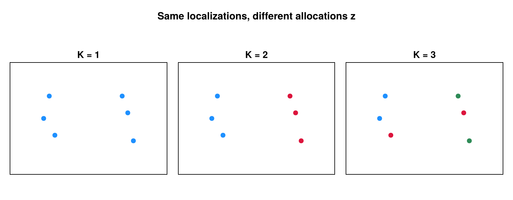
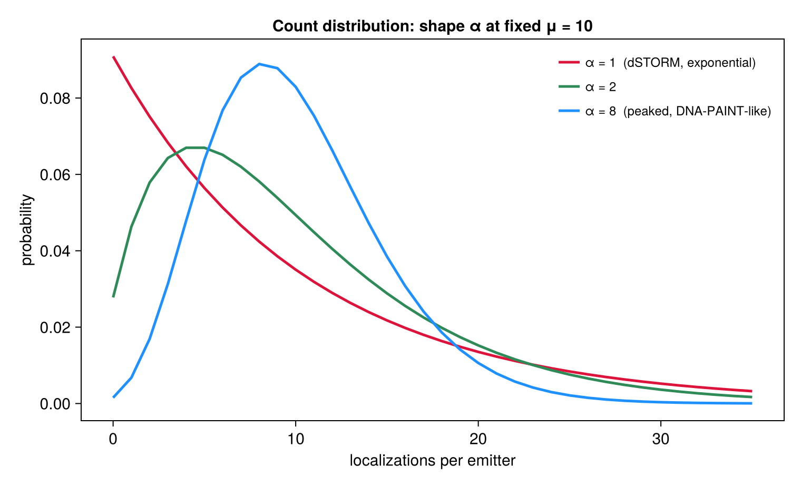

Priors: Allocation, Count & K
Three priors regularize the partition. They are selectable through allocation_model, the count model, and k_prior (see the User Guide).
Allocation: the Dirichlet-Multinomial partition prior
allocation_model = :dm (default) places a Dirichlet–Multinomial (Pólya) prior on the labeled allocation $\mathbf{z}$ with $K$ clusters of sizes $n_1, \dots, n_K$ and concentration $\gamma$ (collapsed_moves.jl, _log_dm_partition):
\[\log P(\mathbf{z} \mid K) = \log\Gamma(K\gamma) - K\log\Gamma(\gamma) - \log\Gamma(N + K\gamma) + \sum_{k=1}^{K} \log\Gamma(n_k + \gamma).\]
This is the Pólya-urn probability of a specific labeled assignment (it omits the multinomial coefficient that the unordered size-vector would carry — correct, because the sampler state is the labeled vector). The $\Gamma(K\gamma)/\Gamma(N+K\gamma)$ normalizer depends on $K$, so the DM prior contributes to $K$-changing moves.
By default $\gamma = \alpha$ (the count-distribution shape), tying allocation concentration to the count model; passing gamma fixes it independently. The alternatives: :decoupled drops this term entirely (spatial likelihood alone drives $\mathbf{z}$), and :categorical uses $P(\mathbf{z}\mid K) = K^{-N}$.

The same six localizations under three candidate allocations ($K = 1, 2, 3$) — the discrete choices the DM partition prior scores. Larger $\gamma$ favors more, smaller clusters.
Count: the negative-binomial blink model
Each emitter's blink count is negative-binomial, and the total $N = \sum_k n_k$ over $K$ emitters is its $K$-fold convolution (collapsed_moves.jl, _log_count_posterior):
\[n_k \mid \mu, \alpha \;\sim\; \mathrm{NegBin}\!\Big(r = \alpha,\ p = \tfrac{\alpha}{\alpha + \mu}\Big), \qquad N \mid K \;\sim\; \mathrm{NegBin}\!\Big(r = K\alpha,\ p = \tfrac{\alpha}{\alpha + \mu}\Big),\]
with $\mathbb{E}[n_k] = \mu$ and shape $\alpha = \texttt{shape}$. This term is always active; it enters every $K$-changing move as $\Delta_{\text{count}} = \log P(N \mid K') - \log P(N \mid K)$ and is the main regularizer of $K$ under the default :locmix model.

The per-emitter count distribution $\mathrm{NegBin}(\alpha, \alpha/(\alpha+\mu))$ at fixed mean $\mu = 10$ for several shapes: $\alpha = 1$ is the dSTORM exponential (monotone decreasing), while larger $\alpha$ gives a peaked, DNA-PAINT-like shape. The shape is itself learned — see Hierarchical Learning.
The shorthand $P(N\mid K) = \mathrm{Gamma}(N; K\alpha, \mu/\alpha)$ describes the continuous rate layer of the Gamma–Poisson mixture. The implementation evaluates the exact discrete negative-binomial; the two share the mean $K\mu$ but the NegBin carries the extra Poisson sampling variance.
The emitter-count ($K$) prior
k_prior = :auto (default), :poisson, or :none. Under the default :locmix spatial model there is no separate $K$ prior — the count model plus the DM prior already regularize $K$. Under spatial_model = :flat, the genuine Poisson prior $K \sim \mathrm{Poisson}(\rho A)$ is added (priors.jl, log_prior_k_poisson):
\[\log P(K) = -\rho A + K\log(\rho A) - \log K! \quad (K \ge 1).\]
The $A^K$ factor here cancels the per-cluster $-\log A$ (the uniform position prior $A^{-K}$) supplied by the flat marginal likelihood, so a $K$-changing move's net area contribution is zero — the flat + Poisson-$K$ target is area-invariant. (Before v0.4 the $K\log A$ term was missing, double-subtracting $\log A$ once the flat ML was applied and biasing $K$ with the area unit.) The density $\rho$ is itself learned (see Hierarchical Learning). k_prior = :poisson is valid only with spatial_model = :flat.
These three priors are exactly the prior terms that appear in the move acceptance ratio assembled on The Sampler: Moves.